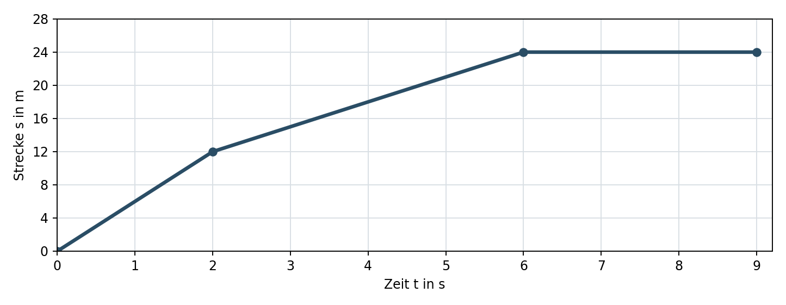

Ein Messwagen bewegt sich geradlinig. Das Zeit-Weg-Diagramm zeigt die zurückgelegte Strecke s in Abhängigkeit von der Zeit t.

a) Berechne die Geschwindigkeiten v₁ für 0 bis 2 s und v₂ für 2 bis 6 s. Gib beide Ergebnisse zusätzlich in Kilometer pro Stunde an.
b) Vergleiche die Geschwindigkeiten und beschreibe die Bewegung zwischen 6 s und 9 s.
Tipps und Musterlösung
Lies bei jedem Zeitintervall die zugehörigen Strecken- und Zeitwerte ab.
Berechne zuerst die Streckenänderung und die Zeitänderung für das Intervall.
Teile Streckenänderung durch Zeitänderung.
Rechne die beiden Geschwindigkeiten mit dem Faktor 3,6 um.
Ein waagerechter Abschnitt bedeutet, dass sich die zurückgelegte Strecke nicht verändert.
Musterlösung
Gegeben: (0 s | 0 m), (2 s | 12 m), (6 s | 24 m), (9 s | 24 m)
Gesucht: v₁, v₂, Vergleich und Bewegung im dritten Abschnitt
a) Abschnitt 1:
Δs₁ = 12 m; Δt₁ = 2 s
Abschnitt 2: Δs₂ = 12 m; Δt₂ = 4 s
b) Im zweiten Abschnitt ist der Wagen halb so schnell. Von 6 s bis 9 s steht er still, da die zurückgelegte Strecke konstant bleibt.
5. Ein fallender Gegenstand
Ein kleiner Gegenstand fällt aus der Ruhe aus einer Höhe h = 7,2 m. Verwende g = 9,81 . Der Luftwiderstand wird vernachlässigt.
a) Berechne die Fallzeit t. Stelle dazu die Fallgleichung nach t um.
b) Berechne die Geschwindigkeit v unmittelbar vor dem Auftreffen. Gib sie in beiden gebräuchlichen Geschwindigkeitseinheiten an.
c) Erkläre, weshalb der berechnete Wert nur für das idealisierte Modell gilt.
Tipps und Musterlösung
Beginne mit der Fallgleichung für einen Start aus der Ruhe.
Isoliere zunächst t² und ziehe anschließend die positive Quadratwurzel.
Berechne die Geschwindigkeit mit v = g · t.
Rechne anschließend in Kilometer pro Stunde um.
Denke bei der Erklärung an den Einfluss des Luftwiderstands.
Kontrollfrage: Warum ist der Fall nicht gleichförmig?
Musterlösung
Gegeben: h = 7,2 m; g = 9,81 ; v₀ = 0
Gesucht: Fallzeit t und Aufprallgeschwindigkeit v
a) h = ½ · g · t² ⇒ t² = 2 · h / g
b) v = g · t
Umrechnung:
c) Tatsächlich wirkt Luftwiderstand entgegen der Bewegungsrichtung. Das Modell beschreibt den idealisierten freien Fall.
Zusatzaufgabe · Ein ICE fährt an
Ein ICE 3 fährt aus dem Stand an. Das Zeit-Weg-Diagramm zeigt, wie weit er in den ersten 40 Sekunden kommt, wenn wir seine Anfahrbeschleunigung als konstant annehmen.
Lies ab, welche Strecke der ICE nach 10 s und nach 30 s jeweils seit dem Start zurückgelegt hat.
Bestimme aus dem Diagramm, nach welcher Zeit der ICE 100 m zurückgelegt hat.
Berechne die Durchschnittsgeschwindigkeit zwischen 10 s und 30 s. Gib sie in Metern pro Sekunde und in Kilometern pro Stunde an.
Beschreibe den Verlauf des Graphen und erkläre, was er über die Geschwindigkeit des ICE aussagt.
Tipps und Musterlösung
Gehe bei a) vom gesuchten Zeitpunkt senkrecht zum Graphen und dann waagerecht zur Streckenachse. Beginne bei b) auf der Streckenachse.
Bilde für c) die Differenz der beiden abgelesenen Strecken. Teile sie durch die Dauer des Zeitintervalls.
Für die Umrechnung von Metern pro Sekunde in Kilometer pro Stunde multiplizierst du den Zahlenwert mit 3,6.
Vergleiche für d) die Steigung des Graphen am Anfang mit der Steigung gegen Ende. Was sagt dir die Steigung über die Geschwindigkeit?
Musterlösung
Nach 10 s hat der ICE etwa 25 m zurückgelegt, nach 30 s etwa 225 m.
100 m erreicht der ICE nach etwa 20 s.
Zwischen 10 s und 30 s legt der ICE etwa 200 m in 20 s zurück.
Der Graph beginnt im Ursprung zunächst waagerecht und wird dann immer steiler. Seine Steigung entspricht der Momentangeschwindigkeit. Der ICE fährt aus dem Stand an und wird immer schneller.
Erweiterung · Ein ICE bremst
Ein ICE 2 bremst bei der Einfahrt in den Bahnhof. Zu Beginn des dargestellten Ausschnitts fährt er 54 Kilometer pro Stunde. Im Modell bremst er gleichmäßig bis zum Stillstand.
Lies ab, welche Strecke der ICE seit Beginn des dargestellten Ausschnitts nach 10 s und nach 20 s zurückgelegt hat.
Lies ab, ab welchem Zeitpunkt der ICE steht und welche Strecke er bis dahin im dargestellten Ausschnitt zurückgelegt hat.
Berechne die Durchschnittsgeschwindigkeit von 0 bis 10 s sowie von 20 bis 30 s. Gib beide Ergebnisse in Metern pro Sekunde und in Kilometern pro Stunde an.
Vergleiche den Verlauf dieses Graphen mit dem Graphen beim Anfahren. Erkläre, was die Steigung in beiden Fällen über die Geschwindigkeit aussagt.
Tipps und Musterlösung
Gehe von 10 s und 20 s jeweils senkrecht zum Graphen und dann waagerecht zur Streckenachse.
Beim Stillstand kommt keine Strecke hinzu. Suche die Stelle, an der der waagerechte Abschnitt beginnt.
Bilde für jedes Zeitintervall zuerst die Streckendifferenz und teile sie durch die Dauer des Intervalls. Multipliziere den Zahlenwert für die Umrechnung mit 3,6.
Vergleiche, wie sich die Steigung in den beiden Diagrammen verändert. Sie entspricht jeweils der Momentangeschwindigkeit.
Musterlösung
Nach 10 s sind etwa 125 m zurückgelegt, nach 20 s etwa 200 m.
Der ICE steht ab etwa 30 s. Er hat bis dahin im dargestellten Ausschnitt etwa 225 m zurückgelegt.
Von 0 bis 10 s
.
Von 20 bis 30 s
.
Beim Anfahren wird der Graph steiler und die Geschwindigkeit steigt. Beim Bremsen wird der ansteigende Graph immer flacher und die Geschwindigkeit sinkt. Sobald der Graph waagerecht verläuft, ist die Geschwindigkeit null und die zurückgelegte Strecke bleibt konstant.